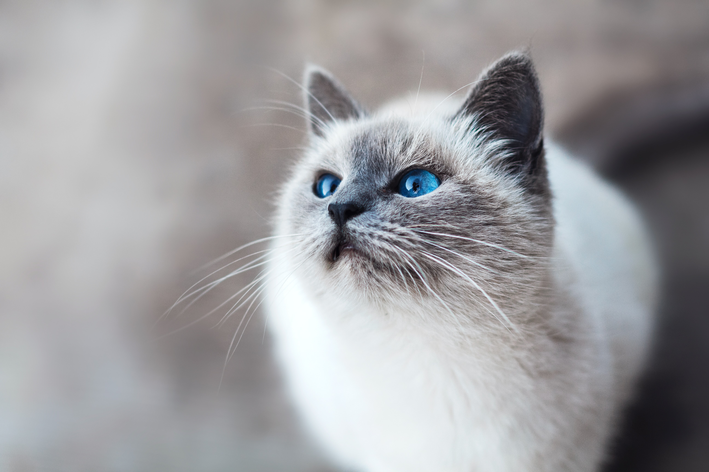

This website is awesome
This website has some subtext that goes here under the main title. It's a smaller font and the color is lower contrast
This website has some subtext that goes here under the main title. It's a smaller font and the color is lower contrast


a very sleepy boi. such a good boi

a very playful boi. such a good boi

a very relaxed boi. such a good boi
a mildly angry boi. such a good boi
"Owners of dogs will have noticed that, if you provide them with food and water and shelter and affection, they will think you are God. Whereas owners of cats are compelled to realize that, if you provide them with food and water and affection, they draw the conclusion that they are God"
-Christopher Hitchens
Call to action! It's time!
Sign up for more happy and angry bois by clicking that button right over there!